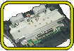
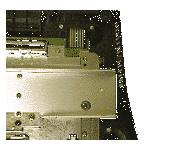

|  |
|  |
パソコンやゲーム機などは、内部に電波の発生源を持っています。その電波が外に漏れると、テレビの画像やラジオの音声などに悪影響をおよぼします。この電波のことを“不要輻射ノイズ”と呼びます。
スーパーファミコンは、比較的低い周波数のクロックで動作していたため、対策のとりようもありましたが、NINTENDO64は、メモリに250MHzという高速なクロックを使用しているのです。しかも、DRAMの内部は500MHzという高い周波数で動作しています。そのため、外に不要輻射ノイズが漏れやすく、対策にかなりてこずりました。 そこで、スタッフが思いついたのが“シールド技術”の採用です。電波の発生源を金属の箱で封じ込めてしまえば、電波は漏れてこないという、もっとも基本的な方法です。しかし、電波の発生源、つまりNINTENDO64の基板をまったく穴のあいていない箱で覆ってしまうと、ゲームカセットもコントローラもさせなくなってしまいます。そのため、不要輻射ノイズの漏れを最小限に押さえることができるシールドの形状、穴のあけかたが研究されました。 また、本体だけでなく、ゲームカセットにもこの技術が用いられることになりました。 そのような数々の試行錯誤を経て、NINTENDO64には“VCCI”の表示が付きました。VCCIという表示のある電機製品は、不要輻射ノイズを規制する規格に合格しています。安心のこの表示、みなさんも探してみてください。ボディの裏側にあります。 |
| ケーブル類やＡＣアダプタへのこだわりのページへ |
 |